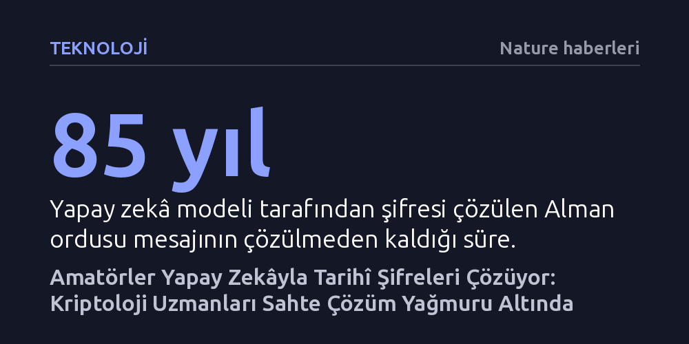

TEKNOLOJI · Nature haberleri · 2026-10-17
Kriptografi uzmanlığı bulunmayan amatörler, büyük dil modellerini kullanarak İkinci Dünya Savaşı'ndan kalma Enigma şifreleri gibi onlarca yıllık tarihî mesajları çözmeye başladı. Ancak yapay zekânın ürettiği çok sayıda hatalı çözüm, uzmanların mesaisini sahte pozitifleri ayıklamakla tüketiyor.
Yapay zekânın şifre kırma yeteneği, uzmanlık gerektiren tarihsel sırları sıradan meraklıların erişimine açarken aynı zamanda uzmanları sahte çözümlerle boğan yeni bir doğrulama krizini başlatıyor.

New York merkezli finans ve medya şirketi Bloomberg'de ürün geliştirme koçu olarak çalışan Carter Leffen, kriptografi alanında hiçbir uzmanlığı olmamasına rağmen tarihe geçebilecek bir deneye imza attı. Oslo'da bağımsız kriptograf Frode Weierud tarafından yönetilen ve çözülmemiş tarihsel şifreleri barındıran 'Crypto Cellar Research' arşivine giren Leffen, GPT-6 Astra modelinden buradaki belgeleri taramasını istedi. Yapay zekâya İkinci Dünya Savaşı'ndan kalma ve tam 85 yıldır gizemini koruyan bir Alman ordusu mesajını seçtirerek çözmesi talimatını verdi.
Leffen, gece uyumadan önce modele sadece birkaç kez düşünmesini sürdürmesi yönünde küçük teşvikler verdi ve çalışmaya devam etmesini istedi. Sabah uyandığında ise ekranında şifresi çözülmüş tam bir metin buldu. Herhangi bir kriptoloji veya kod kırma eğitimi bulunmayan birinin, gelişmiş bir büyük dil modelini sadece doğru yönlendirerek 85 yıllık askeri bir şifreyi çözebilmesi, yapay zekânın ulaştığı pratik problem çözme gücünü çarpıcı biçimde ortaya koyuyor.
Gelişmiş büyük dil modelleri, şifre kırma işini geleneksel kaba kuvvet algoritmalarından çok farklı bir boyuta taşıyor. Bu modeller, sadece şifre çözme algoritmalarını hızla devreye alıp test etmekle kalmıyor; aynı zamanda internet üzerindeki devasa tarihsel arşivleri tarayarak şifrelenmiş metinle eşleşebilecek yazışma kalıplarını, askeri kayıtları ve bağlamsal ipuçlarını birbiriyle ilişkilendirebiliyor.
Alman ordusunun İkinci Dünya Savaşı'nda gizli haberleşmeleri için kullandığı Enigma makinesi, içindeki döner mekanizmalar ve bağlantı fişleri sayesinde her harfi 103 sekstilyon farklı yoldan şifreleyebiliyordu. Bu astronomik olasılık havuzu içinde kaybolmadan doğru algoritmik rotayı bulup tarihsel bağlamla birleştirmek, yapay zekânın mantıksal akıl yürütme ve araştırma yeteneklerinin birleştiği yeni bir eşiği simgeliyor.
Kriptoloji uzmanları, yapay zekâ sayesinde tarihî şifrelere ve kod kırmaya yönelik ilginin aniden patlamasından memnuniyet duysa da madalyonun diğer yüzü ciddi bir tıkanıklığa işaret ediyor. Amatör kullanıcıların yapay zekâ modellerine çözdürdükleri metinleri derinlemesine sorgulamadan uzmanlara göndermesi, doğrulama taleplerinde benzeri görülmemiş bir yığılma yarattı.
Yapay zekânın ürettiği çözümlerin önemli bir kısmı aslında mantıklı görünen ancak gerçeği yansıtmayan yanılsamalardan ibaret. Kriptografi üzerine kitaplar yazan emekli oyun geliştiricisi Elonka Dunin, “Kriptanalizden gerçekten anlamayan kişilerden gelen o kadar çok sahte pozitif var ki,” diyerek uzmanların zamanının bu hatalı sonuçları ayıklamakla heba olduğunu belirtiyor. Bu durum, yapay zekânın getirdiği kolaylığın uzman denetimi olmadan yeni bir bilgi kirliliği yaratabileceğini gösteriyor.